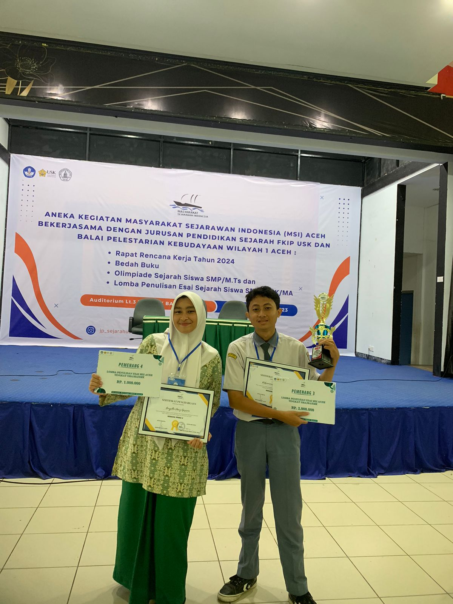
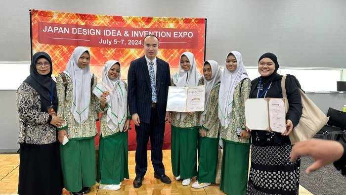
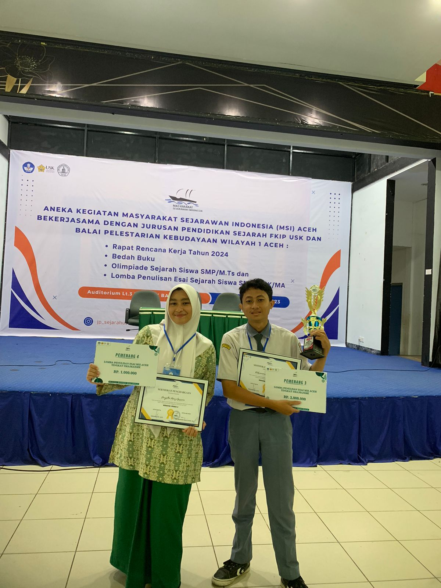
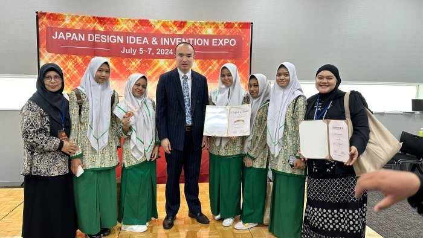

KTI-R SMANTIG
KTI-R SMANTIG is a platform that connects smantig students with each other to help them in their studies and projects.
JOIN US!KTI-R SMANTIG is a platform that connects smantig students with each other to help them in their studies and projects.
JOIN US!Karya Tulis Ilmiah Remaja (KTI-R) is an organization that is open to teenagers who want to develop creativity, science and technology in the present and the future. In order for Karya Tulis Ilmiah Remaja (KTI-R) extracurricular activities to be carried out in an orderly, neat, comprehensive and professional manner, it is necessary to have a plan or extracurricular program for youth scientific work. With the preparation of this program, it is hoped that the principal, OSIS supervisor, supervising teachers and other education personnel, school committee administrators and their members, and all students will better understand the meaning, purpose, types and forms of activities, and how to manage self-development through Karya Tulis ilmia Remaja (KTI-R) extracurricular activities at SMA Negeri 3 Banda Aceh.
The achievements we have achieved start from local to international level!

 




Deskripsi akan muncul di sini.
POST ARE STILL UNDER DEVELOPMENT
KTI-R answers frequently asked questions about KTI-R. We also provide other explanations related to KTI-R.